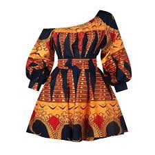

Who We Serve
Local Tailors & Artisans
EcoSpin provides **affordable, high-quality recycled fibers** to local tailors and knitters, allowing them to craft sustainable products while reducing textile waste.

Eco-Conscious Fashion Designers
As more designers seek **ethical materials**, EcoSpin offers an opportunity to create fashion that doesn’t harm the environment.
Schools & Youth Programs
We partner with **schools and training centers** to teach young people about **recycling, textile innovation, and the power of sustainability**.

Government & Environmental Initiatives
EcoSpin aligns with **Uganda’s waste management goals** and supports policies promoting a circular economy.